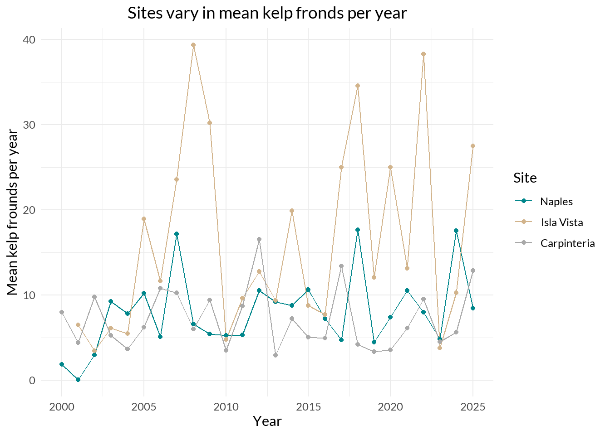
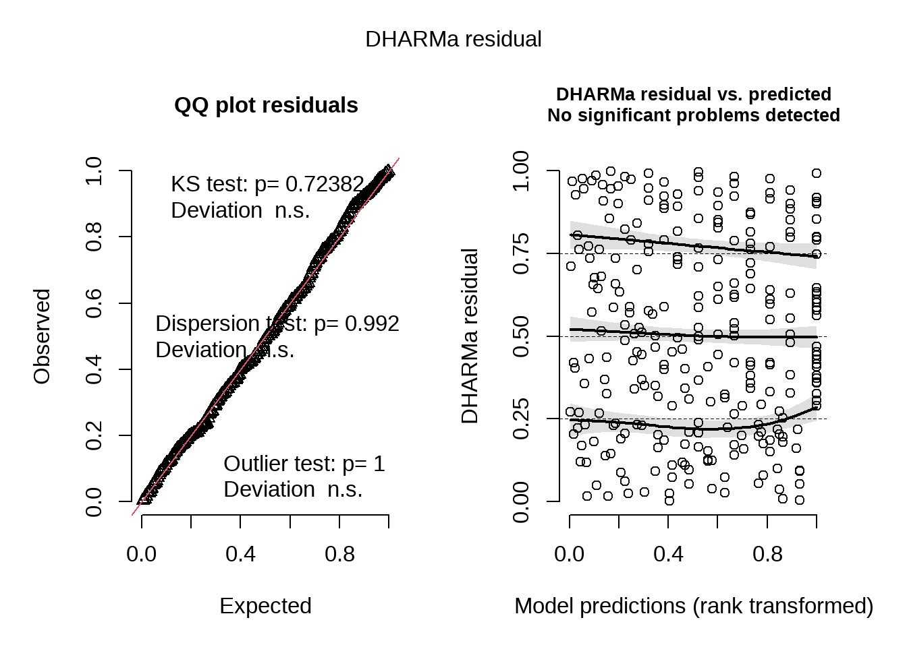
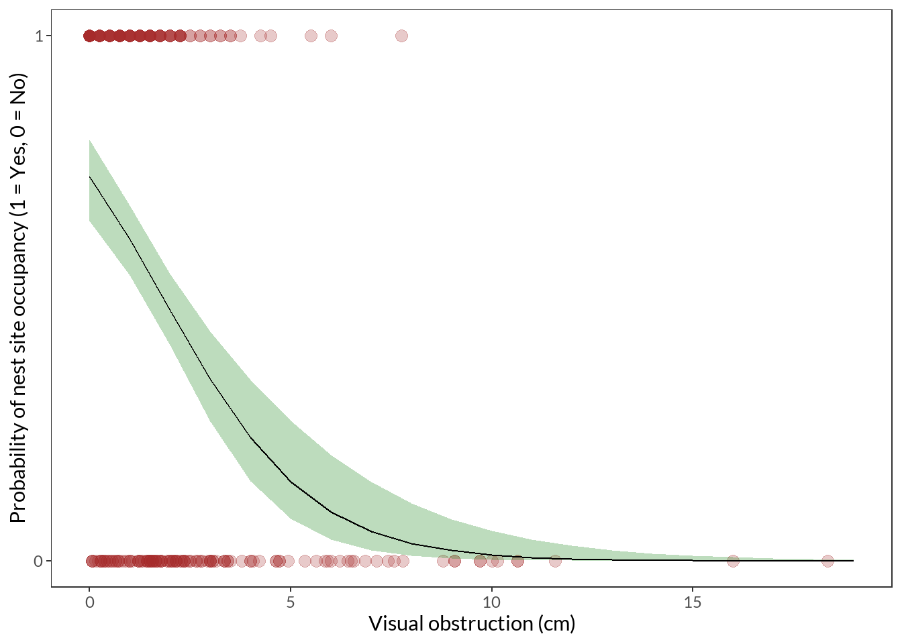
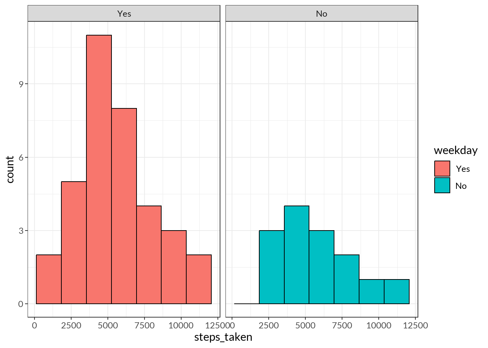
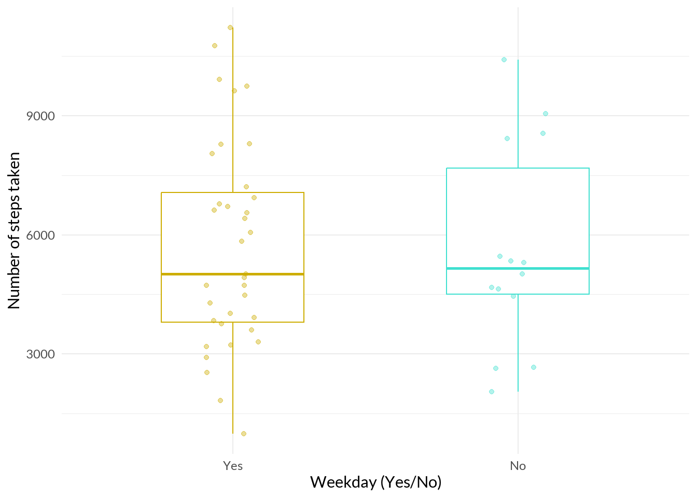

# loading libraries
library(tidyverse)
library(janitor)
library(here)
library(sysfonts)
library(showtext)
library(MuMIn)
library(DHARMa)
library(ggeffects)
library(effsize)
library(gtsummary)
# loading data
kelp <- read_csv(here("data", "Annual_Kelp_All_Years_20250903.csv"))
mp_selection <- read_csv(here("data", "MOPL_nest-site_selection_Duchardt_et_al._2019.csv"))
personal <- read_csv(here("data", "envs193ds-personal-data.csv")) |>
clean_names() |> # clean column names
mutate(weekday = fct_relevel(as_factor(weekday), "Yes", "No")) # transform weekday into a factor
# fonts
font_add_google("Lato", "lato") # load font "Lato" and save as "lato"
showtext_auto() # enable show text
showtext_opts(dpi = 200) # change show text sizeENVS 193DS Winter 2026 Final
Set up
Problem 1. Research writing
a. Transparent statistical methods
In part 1, they used a linear regression, which we can determine by considering that they were asking about whether a variable (precipitation) predicts the output of a continuous response variable (flooded wetland area). In part 2, they used a Kruskal-Wallis test, which we can determine by considering that they compared the median wetland areas of more than two groups (wet, above normal, below normal, dry, critical drought) to see if one of the medians differed from the others.
b. Figure needed
One figure that could accompany the statement in part 2 is a side-by-side boxplot of wetland area across different water year classifications. We would include water year type on the x-axis and wetland area (in m2) on the y-axis. For each year type, we would include a vertically-oriented boxplot with the box representing the 1st quartile, median, and 3rd quartile, and the tails representing 1.5 \(\times\) IQR. We would also include underlying data points (observations of wetland area) behind the boxes as a jitter plot. This way, it is possible to visually determine the central tendency and relative variance of each treatment group (year type), which should support the fact that not one treatment group median is significantly different from the others.
c. Suggestions for rewriting
We have determined that flooded wetland area in the San Joaquin River Delta is not predicted by precipitation (linear regression, F(df) = test statistic, p = 0.11, \(\alpha\) = 0.05). We have also found that median flooded wetland area does not differ across water year classification (wet, above normal, below normal, dry, critical drought) (Kruskal-Wallis test, H = test statistic, p = 0.12, \(\alpha\) = 0.05).
d. Interpretation
One additional variable that could influence the flooded area of a wetland is the location of the land parcel, particularly if land parcels are private or public land. This variable is a binary categorical variable (private/not private or public/not public). This variable might influence wetland flooding because management strategies (involving water diversion restriction meant to retain flooded wetlands) are suggested to differ between public and private land parcels, making it plausible that there could be a difference in wetland area between lands that choose to divert water and those that choose to retain water.
Problem 2. Data visualization
a. Cleaning and summarizing
kelp_clean <- kelp |> # use kelp data
clean_names() |> # change column names to lowercase
filter(!(date == "2000-09-22" & transect == "6" & quad == "40")) |> # filter out observations with this date, transect number, and quad number
filter(site %in% c("IVEE", "NAPL", "CARP")) |> # only keep observations with IVEE, NAPL, or CARP as their site
mutate(site_name = case_when(site == "NAPL" ~ "Naples", # create a new column site_name with full names of site codes
site == "IVEE" ~ "Isla Vista",
site == "CARP" ~ "Carpinteria")) |>
mutate(site_name = as_factor(site_name), # set site_name to factor instead of string
site_name = fct_relevel(site_name, # set levels to site_name factors
"Naples", "Isla Vista", "Carpinteria")) |>
group_by(site_name, year) |> # group by site_name and year
summarize(mean_fronds = mean(fronds)) |> # give use the mean frond count
ungroup() # stop grouping by site_name and year
slice_sample(kelp_clean, n = 5) # show a sample of 5 random observations# A tibble: 5 × 3
site_name year mean_fronds
<fct> <dbl> <dbl>
1 Isla Vista 2012 12.8
2 Isla Vista 2019 12.1
3 Carpinteria 2014 7.26
4 Isla Vista 2006 11.6
5 Carpinteria 2010 3.53str(kelp_clean) # view the structure of datasettibble [77 × 3] (S3: tbl_df/tbl/data.frame)
$ site_name : Factor w/ 3 levels "Naples","Isla Vista",..: 1 1 1 1 1 1 1 1 1 1 ...
$ year : num [1:77] 2000 2001 2002 2003 2004 ...
$ mean_fronds: num [1:77] 1.8947 0.0606 3.0111 9.2596 7.8141 ...b. Understanding the data
Because we are looking at frond observations, we want to exclude observations from 2000-09-22 in transect 6 in quad 40 because they are marked to have -99999 fronds. This does not biologically make sense, but it is instead intended to represent that there is missing data (NA), as indicated by the notes section saying that the datasheet was lost; this reasoning is also outlined in the Methods and Protocols section for this dataset.
c. Visualize the data
ggplot(data = kelp_clean, # use clean kelp data
aes(x = year, # set x- and y-axes, differentiate by site name
y = mean_fronds,
color = site_name)) +
geom_line() + # add line plot
geom_point() + # add point observations
labs(x = "Year", # add labels to x- and y-axes, add title, and change legend title
y = "Mean kelp frounds per year",
title = "Sites vary in mean kelp fronds per year",
color = "Site") +
scale_color_manual(values = c("Naples" = "turquoise4", # Change three groups to customs colors
"Isla Vista" = "tan",
"Carpinteria" = "darkgrey")) +
theme_minimal(base_family = "lato") + # change theme, set custom font
theme(plot.title = element_text(hjust = 0.5)) # center the title
d. Interpretation
We can see that the site with the most variable mean kelp fronds per year is Isla Vista, which we can visually determine based on how the tan points alternate between being high (higher than the other two sites) and low (about as low as the other sites) on the y-axis. The site with the least variable mean kelp fronds per year is Carpinteria, which we can similarly visually determine based on how the points do not seem to fluctuate in position on the y-axis as much as the other two plots, with the higher points being about as high or lower than Naples (the second-least variable site) and the lower points being about as low or a little higher than the other two sites; inferring that this site has a smaller range of mean kelp frond measurements, which could also infer less variation.
Problem 3. Data analysis
a. Response Variable
The 1s and 0s represent whether or not a site was used by a Mountain Plover. The 1s indicate that a site was used, and the 0s indicate that a site was unused.
b. Purpose of study
Visual obstruction
This predictor variable is continuous, as it comprises measurements of vegetation height and density (Methods, Adult Mountain Plover Density, Data collection, paragraph 3), both of which can take on any value in a range, including fractional units. As visual obstruction increases, the probability of Mountain Plover nest site occupancy would decrease because Mountain Plovers have been found to prefer bare-ground habitats (Methods, Mountain Plover Density, Modeling framework, paragraph 1, Knopf and Miller 1994).
Distance to prairie dog colony edge
This predictor variable is continuous, as a distance can take on any value in a range, including fractional units. As distance to the pririe dog colony edge increases, the probability of Mountain Plover nest site occupancy would increase because “Mountain Plovers are especially dependent on black-tailed prairie dogs (Cynomys ludovicianus) to engineer suitable habitat through soil disturbance and vegetation clipping (Dinsmore et al. 2005, Augustine and Derner 2012, Duchardt et al. 2018),” (Introduction, paragraph 3).
c. Table of models
| Model # | Visual obstruction | Distance to prairie dog colony | Model description |
|---|---|---|---|
| 0 | \(\times\) | \(\times\) | Null model |
| 1 | \(\checkmark\) | \(\checkmark\) | Saturated model |
| 2 | \(\times\) | \(\checkmark\) | Edge distance only model |
| 3 | \(\checkmark\) | \(\times\) | Visual obstruction only model |
d. Run the models
mopl_clean <- mp_selection |> # use raw mp_selection data
clean_names() |> # clean column names, no upper case or spaces
mutate(used_bin = case_when(id == "used" ~ 1, # create a binary column, "used" = 1, "available" = 0
id == "available" ~ 0)) |>
select(used_bin, edgedist, vo_nest) # select only these columnsmopl_model0 <- glm(data = mopl_clean, # create a null glm model using clean mopl data
used_bin ~ 1, # response vs. 1
family = "binomial") # use logistic regression type glm
mopl_model1 <- glm(data = mopl_clean, # create a saturated glm model using clean mopl data
used_bin ~ edgedist + vo_nest, # response vs. edge distance and visual obstruction
family = "binomial") # use logistic regression type glm
mopl_model2 <- glm(data = mopl_clean, # create a glm model using clean mopl data
used_bin ~ edgedist, # response vs. edge distance
family = "binomial") # use logistic regression type glm
mopl_model3 <- glm(data = mopl_clean, # create a glm model using clean mopl data
used_bin ~ vo_nest, # response vs. visual obstruction
family = "binomial") # use logistic regression type glme. Select the best model
model.sel(mopl_model0, mopl_model1, mopl_model2, mopl_model3, rank = AIC) # select the best fitting model based on Akaike's Information Criterion (AIC)Model selection table
(Int) edg vo_nst df logLik AIC delta weight
mopl_model3 1.0050 -0.5463 2 -163.885 331.8 0.00 0.728
mopl_model1 1.0310 -8.065e-05 -0.5461 3 -163.871 333.7 1.97 0.272
mopl_model0 0.0000 1 -191.309 384.6 52.85 0.000
mopl_model2 0.1001 -3.016e-04 2 -191.046 386.1 54.32 0.000
Models ranked by AIC(x) The best model as determed by Akaike’s Information Criterion (AIC) is the model using only visual obstruction as a predictor to nest site usage, as it has the lowest AIC compared to the other three models.
f. Check the diagnostics
plot(
simulateResiduals(mopl_model3) # display the DHARMa diagnostic plots for the simulated residuals
)
We can see that our simulated residuals follow a uniform distribution, which we can visually determine by seeing how the triangle points (representing the residual of one observation) fall onto the red line (theoretical uniform distribution). We can also see uniformity in our DHARMa residuals across our rank-transformed model predictions.
g. Visualize the model predictions
mopl_preds <- ggpredict(mopl_model3, # generate predicted probabilities
terms = "vo_nest [0:19 by = 1]")
ggplot(mopl_clean, # use cleaned mopl data
aes(x = vo_nest, # set x- and y-axes
y = used_bin)) +
geom_point(size = 3, # add point observations; edit size, color, and transparency
color = "brown",
alpha = 0.25) +
geom_ribbon(data = mopl_preds, # add a 95% CI around model predictions
aes(x = x,
y = predicted,
ymin = conf.low,
ymax = conf.high),
alpha = 0.3, # change the transparency of the ribbon
fill = "forestgreen") + # change the color of the ribbon
geom_line(data = mopl_preds, # add a line for model predictions
aes(x = x,
y = predicted)) +
scale_y_continuous(limits = c(0,1), # set limits of y-axis to show full probability range 0 to 1
breaks = c(0,1)) +
labs(x = "Visual obstruction (cm)", # add axis labels
y = "Probability of nest site occupancy (1 = Yes, 0 = No)") +
theme_bw(base_family = "lato") + # change theme, change to custom font
theme(panel.grid = element_blank()) # remove gridlines
h. Write a caption for your figure
Figure 1. Mountain plovers tend to select sites with lower visual obstruction. The x-axis represents the level of visual obstruction at a site in cm. The y-axis is a scale of probability from 0 to 1. The points represent individual observations of site selection. The black line represents the model prediction of site selection probability. The green ribbon represents a 95% confidence interval for the model predictions.
i. Calculate model predictions
# calculate the predicted probability of nest-site occupancy
ggpredict(mopl_model3, # use our best model based on AICc
terms = "vo_nest [0]") #visual obstruction = 0# Predicted probabilities of used_bin
vo_nest | Predicted | 95% CI
--------------------------------
0 | 0.73 | 0.65, 0.80The predicted probability of Mountain Plover nest site occupancy at 0 on the index of visual obstruction is 0.73, or 73%.
j. Interpret your results
The predicted probability of Mountain Plover nest site occupancy when there is no visual obstruction (0 on visual obstruction index) is 0.73, or 73%. From our selected model, we can see that there is a negative relationship between visual obstruction and probability of occupancy. That is, as visual obstruction increases, we would expect to observe a lower probability of nest site occupancy by Mountain Plovers. From Figure 1, we can see that there is a sharp decrease in probability of site occupancy as we move towards more visual obstruction. Biologically, this is because “the short, dense layer [of vegetation] can provide some concealment to a sitting plover’s body” (Discussion, paragraph 4) and having sparse taller vegetation can still slightly obstruct the outline of the plover while still allowing the plover to scan for predators (Discussion, paragraph 4).
Problem 4. Affective and exploratory visulizations
a. Comparing visualizations
My affective visualization differs from my exploratory visualizations that I made for Homework 2 by presenting more information in one figure than the exploratory visualizations. In the affective visualization, each data point (footprint) communicated information about the steps taken, caffeine consumption, on-call status, and weekday/weekend association, whereas my exploratory visualizations showed at most two predictor variables. Additionally, my affective visualization does not follow any axes (instead uses a calendar organization), whereas the exploratory visualizations require axes to be interpretable.
My two types of visualizations are similar in the way that they use color to differentiate between groups within a variable. For example, my affective visualization uses color to differentiate higher step counts from lower step counts in a single day, and my exploratory visualizations use color to differentiate between weekdays and weekends.
b. Designing an analysis
My response variable (step count) is a discrete variable, and my predictor variable (weekday/weekend) is a binary categorical variable. My initial question when collecting this data was: How does the number of steps I take vary between weekdays and weekends? Because we want to identify if there is a difference between two groups, and our response variable is not continuous, it would be appropriate to use a non parametric test that compares the ranks of the data points between the two groups. We have a test that does this: the Wilcoxon rank sum test! We would use this instead of the t-test (the parametric counterpart) because our count data does not follow a normal distribution, breaking one of the assumptions of the t-test.
c. Check any assumptions and run your analysis
Checking assumptions
We will check the assumptions that (1) our response variable is either continuous or ordinal, (2) our predictor variable has two categorical, independent groups, (3) our observations are independent, and (4) the two groups have the same shape distributions.
We have already checked assumptions 1 and 2 in part 4b.
We can also say that our observations are independent, since the number of steps I take in a day doesn’t affect the steps I take in another day, so we meet assumption 3!
Now we will check assumption 4.
ggplot(data = personal, # use personal data
aes(x = steps_taken, # set x-axis to steps taken
fill = weekday)) + # differentiate by weekday status
geom_histogram(bins = 7, color = "black") + # create a histogram
facet_wrap(~ weekday) + # separate into panels based on weekday status
theme_bw(base_family = "lato") # change the theme, change the font
Although there is a difference in height between the two peaks (which can be attributed to the fact that there are many more weekday observations than weekend observations), we can see that both distributions have a slight right skew. Overall, the shapes of both distributions look relatively the same.
Now all of our assumptions are checked! Let’s run the test.
Running the test
wilcox.test( # run a Wilcoxon rank sum test
steps_taken ~ weekday, # response ~ predictor
data = personal # use personal data
)
Wilcoxon rank sum exact test
data: steps_taken by weekday
W = 247, p-value = 0.9738
alternative hypothesis: true location shift is not equal to 0cliff.delta( # calculate Cliff's delta (effect size)
steps_taken ~ weekday, # response ~ predictor
data = personal # use personal data
)
Cliff's Delta
delta estimate: 0.008163265 (negligible)
95 percent confidence interval:
lower upper
-0.3465215 0.3608058 d. Create a visualization
ggplot(data = personal, # use personal data
aes(x = weekday, # set s- and y-axes
y = steps_taken,
color = weekday)) + # differentiate by weekday status
geom_boxplot(width = 0.5) + # create a boxplot, set the width
geom_jitter(height = 0, # overlay a jitter plot, no height jitter
width = 0.1, # set horizontal jitter
alpha = 0.4) + # set transparency of points
scale_color_manual(values = c("Yes" = "gold3", # choose custom colors
"No" = "turquoise")) +
labs(x = "Weekday (Yes/No)", # add labels to x- and y-axes
y = "Number of steps taken") +
theme_minimal(base_family = "lato") + # change theme, change font
theme(legend.position = "none") # remove the legend
e. Write a caption
Figure 2. Step count does not differ between weekdays and weekends. The x-axis describes whether the day is a weekday (yes weekday) or a weekend (no weekday). The y-axis describes the number of steps taken. Each point represents an observation from one day. The boxes represent the first quartile (bottom of the box), the median (center line), and the third quartile (top of the box). The tails of the boxes represent the range of data within 1.5 \(\times\) IQR.
f. Write about your results
We can see that between weekdays and weekends, there is no difference in the number of steps taken (Wilcoxon rank sum test, W = 247, p = 0.9738, \(\alpha\) = 0.05). We also see a negligible effect of weekday type on number of steps taken (\(\delta\) = 0.008).
g. Sharing your affective visualization
(Done in person during Week 10 workshop.)